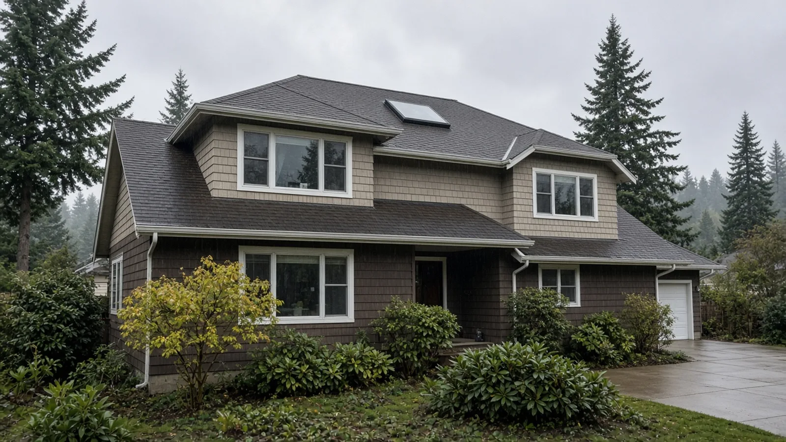
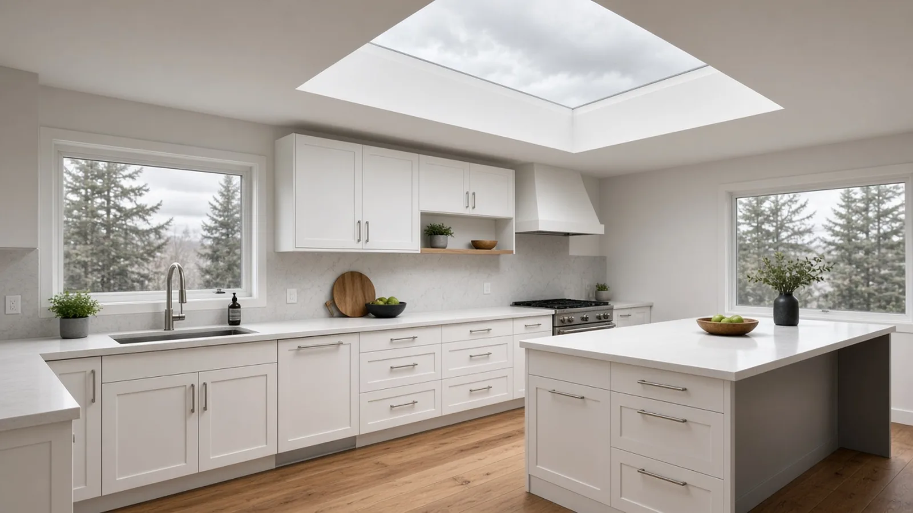
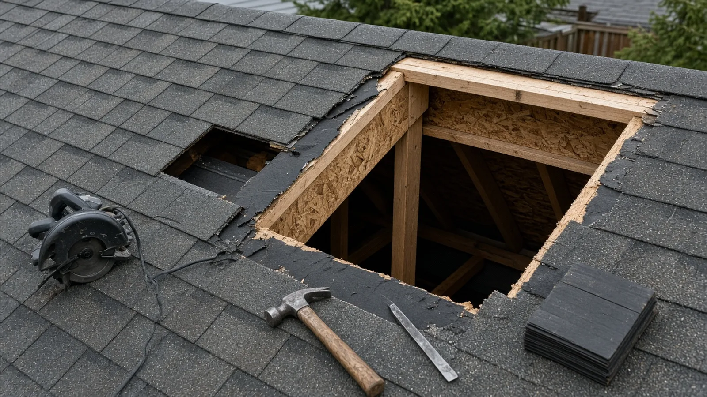
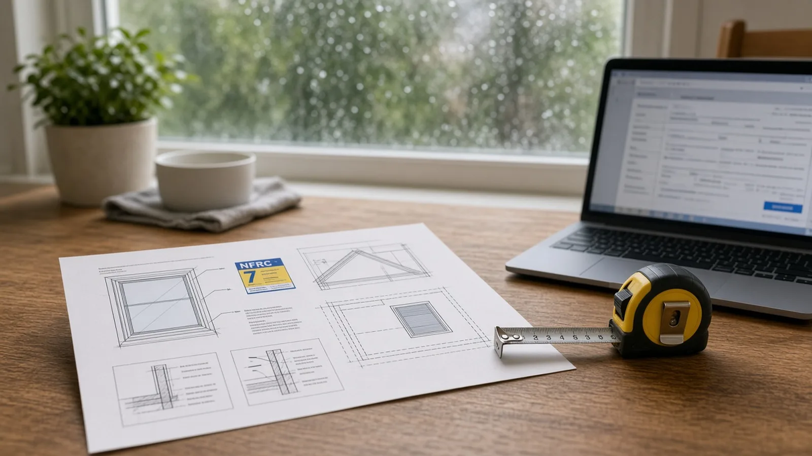
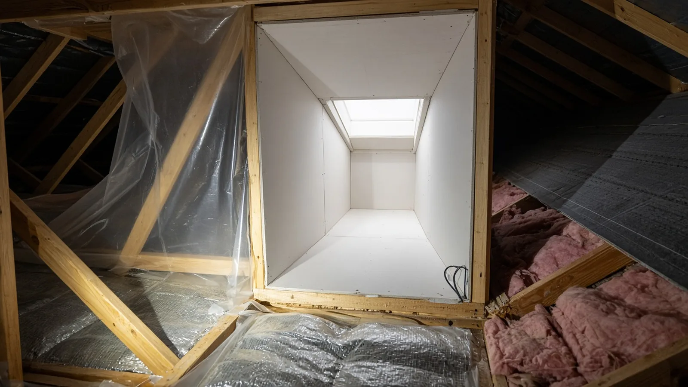
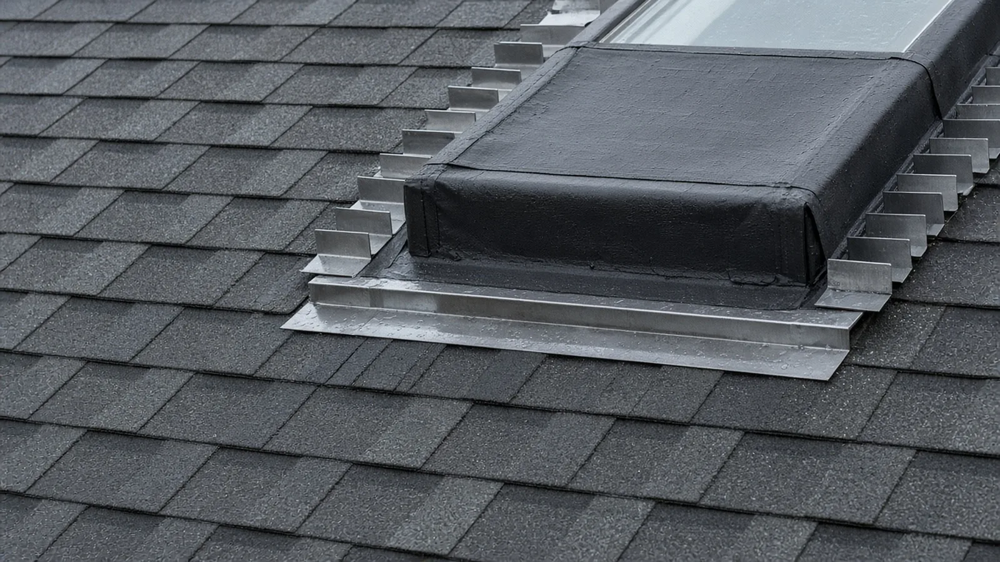
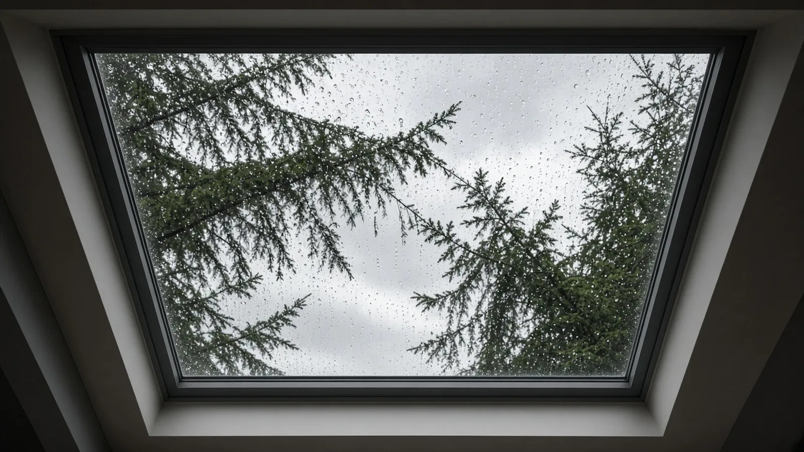
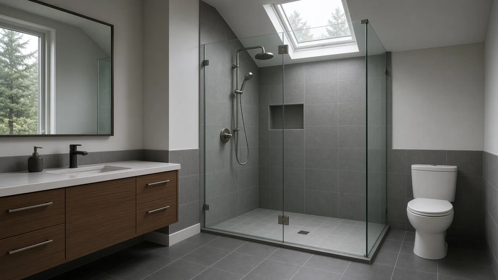
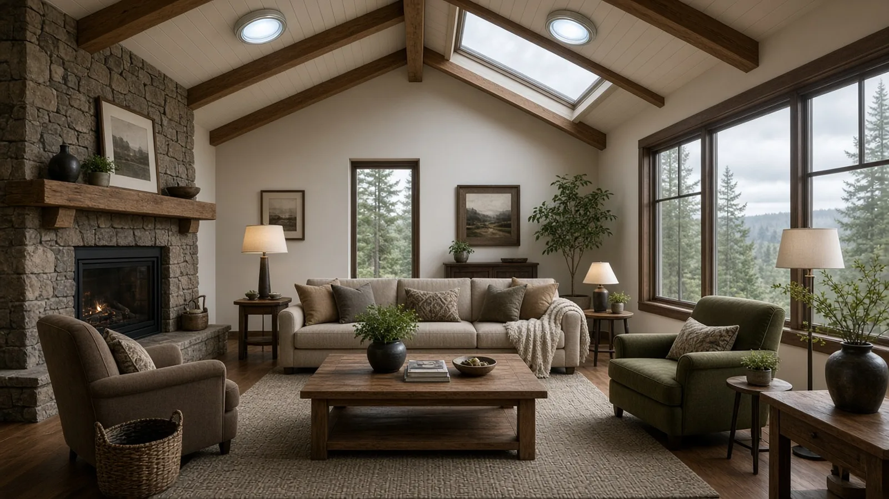

Skylight Installation Redmond WA — Permits, Energy Code U-Factors, Roof Framing and Leak-Proof Flashing
By Board of Project Stewardship Editorial
Key Takeaways
- A new skylight in Redmond is a building-permit project. The City's Residential Permits page lists alterations and remodels of an existing home under building permits, and its Work Exempt from Permit handout only exempts replacing exterior windows in existing openings without changing the size. Cutting a new hole in the roof is not on that list, and the City says projects not on the list require a permit.
- Buy to Washington's energy code numbers. Table R402.1.2 of the Washington State Energy Code, residential (WAC 51-11R) sets a skylight U-factor of 0.50 for climate zone 5 and marine 4, which covers Redmond. Ask for the rated U-factor on the label of the exact unit before you order.
- Powered skylights need a Redmond electrical permit, and every firm gets checked. Redmond is on L&I's list of cities that issue their own electrical permits. Look up every contractor on Washington L&I Verify before you sign.
Why skylights are worth it in Redmond
Redmond winters are short on daylight and long on gray skies. Many houses on Education Hill, in Grass Lawn, around Bear Creek and out toward Avondale sit under tall firs and cedars. Kitchens, hallways, stairwells and interior bathrooms in those homes can need the lights on at noon in December. A well-placed skylight or tubular daylighting device brings light from straight overhead, which side windows under a tree canopy often can't.
A skylight is also a hole in the roof in one of the wetter parts of the country. A good one gives you decades of daylight. A bad one shows up as a brown ring on the ceiling, a sweating shaft, or a rotted rafter. The difference comes down to permits, framing, product choice and flashing, which this guide covers.
It sticks to what the City of Redmond and Washington State actually publish. For local firms and other Redmond guides, start with the Board of Project Stewardship's Redmond directory and the Board's permits overview.

Does a Redmond skylight need a permit?
Redmond's Residential Permits page lists what needs a building permit, including "additions, alterations and remodel of an existing home." It then answers "When don't I need a permit?" with a short list. Two items on that list are worth reading closely:
- Removal and replacement of exterior windows in existing window openings. The size and opening may not be altered, and the operable opening size may not be decreased.
- Light weight roof covering. The City's Work Exempt from Permit handout exempts composition, metal and similar roof coverings where the installed weight is under 4 pounds per square foot.
A new skylight fits neither one. It means cutting rafters or trusses, adding headers and building a shaft through the attic, which is structural alteration. The handout opens with a caution too: an exemption does not authorize any work that violates the code or other laws. The City's rule is simple: "Projects not included in this list will require a building permit."
What about replacing an old skylight with one of the same size? The handout's window exemption covers exterior windows in existing openings, and a skylight is a roof opening. Don't assume a like-for-like swap is exempt. Call the Development Services Center and ask before work starts, especially if the curb, the framing or the opening size will change.

How to apply in Redmond
What the City publishes about the process:
- Two online portals. Redmond's How to Apply page explains that over-the-counter permits, the ones that don't need plan review, go through the Redmond ePermitting Service (REPS). Plan-reviewed permits start with a request on the Plan Review Online (PRO) portal. Within 48 hours you get an email with a permit number and instructions for uploading your documents. The City recommends creating a REPS account so you can manage the permit, pay and request inspections online.
- Separate submittals. The Residential Permits page says all permit applications are separate submittals. The building permit and an electrical permit for a powered skylight are two different applications.
- The counter. The Development Services Center is on the second floor of City Hall at 15670 NE 85th Street, and its listed phone number is 425-556-7000. Plans brought in person must be PDFs on a USB drive. The City does not accept paper applications or plans.
- Fees. The City says each permit is based on the value of construction and points to its Development Services fee schedule. You can email the Permit Technicians for an estimate. The Board does not publish fee figures. Ask the City for the number that applies to your project.
The City also warns about phishing on its How to Apply page: confirm any unexpected permit or payment message through official City channels before you pay anything.
The codes behind a Redmond skylight
Redmond's Code and Design Requirements sheet lists the adopted codes and the City's design values. For a house, the main ones are:
- The 2021 International Residential Code with Washington's amendments in WAC 51-51.
- The 2021 International Energy Conservation Code with Washington amendments (WAC 51-11R for residential), plus Redmond Municipal Code Chapter 15.18 (Energy Code).
- The 2023 National Electrical Code and Redmond Municipal Code Chapter 15.12 (Electrical Code).
The same sheet lists Redmond's design values: 110 mph design wind speed, 15 psf ground snow load, a 5 psf rain-on-snow surcharge for flat roofs, Seismic Design Category D (D2 residential), a 1-inch-per-hour rainfall rate, a 12-inch frost line and 1,500 psf soil bearing unless there is a geotechnical report. For a skylight, wind, snow and seismic are the ones that matter. When you cut a rafter, the header and the doubled rafters on each side have to carry the roof load around the opening.
Energy code: what the U-factor numbers mean
Skylights lose more heat than any other part of the roof, so Washington's residential energy code treats them separately from windows. The numbers below come straight from the state code:
- Prescriptive limit. Table R402.1.2 lists a skylight U-factor of 0.50 for climate zone 5 and marine 4, compared with 0.30 for vertical fenestration such as windows. Lower is better.
- Hard ceiling with tradeoffs. Section R402.5 caps the area-weighted average skylight U-factor at 0.75 where tradeoffs are used under the total UA alternative or the performance path.
- Small-area exemption. Section R402.3 allows up to 15 square feet of glazed fenestration per dwelling unit to be exempt from the U-factor and SHGC requirements in R402.1.2, but not under the total UA alternative. Whether your skylight can use that allowance depends on what else in the house already uses it. Your designer or plans examiner makes that call.
- Air leakage. Section R402.4 says windows, skylights and sliding glass doors must leak no more than 0.3 cfm per square foot when tested to NFRC 400 or AAMA/WDMA/CSA 101/I.S.2/A440, and must be listed and labeled by the manufacturer.
- Seal the gap. The state's air barrier and insulation table requires the space between skylights and framing to be sealed.
In practice, ask for the label. A factory unit should carry a rating label showing its U-factor, and that number goes on the plans. Tubular daylighting devices are rated differently from skylights. Ask the supplier how the exact model is rated and labeled for Washington.

Roof framing: cut the hole right
Most leaks get blamed on flashing, but a lot of skylight trouble starts with framing:
- Rafters vs. trusses. Cutting a rafter in a stick-framed roof is routine work when it's headered properly. Cutting a manufactured truss is a different matter. Trusses are engineered as a unit, and cutting a chord or web without an engineered repair can compromise the roof. If your attic has trusses, choose a unit that fits between them or ask for engineering.
- Headers and doubled rafters. The opening should be framed with headers top and bottom and the rafters on each side doubled as the design requires. Ask the bidder to draw it.
- Placement. Keep the skylight away from valleys, chimneys and roof-to-wall intersections, where water and debris build up. Under firs, think about where the needles will collect.
- The shaft. In a house with an attic, the light shaft runs from the roof opening to the ceiling. Splaying the shaft walls spreads light, but every shaft wall is now an exterior wall in the attic and has to be insulated and air-sealed like one.

Flashing that survives a Redmond winter
Here is what a leak-proof installation on a shingle roof looks like:
- Membrane first. Self-adhered underlayment wraps the curb and laps onto the roof deck around the opening, sealing nail holes and sending water out over the layer below.
- Sill (apron) flashing at the bottom, lapped over the shingles below so water drains onto the roof surface.
- Step flashing up both sides, one piece woven with each course of shingles, so every piece laps over the one below it.
- Head flashing at the top, tucked under the shingles above so water coming down the roof is pushed around the curb.
- Factory flashing kits. Skylight makers sell flashing kits matched to roof pitch and roofing material. Use the kit specified for the unit and follow the manufacturer's instructions, which many warranties require.
- No caulk-only fixes. Sealant has its place in some details, but a skylight that relies on caulk to stay dry will fail sooner or later.
The video above is a manufacturer's installation walkthrough for a curb-mounted skylight on a shingle roof. It covers calculating the rough opening, building the curb, and installing the step-flashing kit course by course. Even if a crew installs your skylight, it's worth watching so you know what a correct layering sequence looks like, and you can ask to see photos of that stage.

Condensation is not always a leak
Redmond homeowners often call a contractor about a "leaking" skylight in January that is really condensation: warm, moist indoor air hitting cold glass or an uninsulated shaft. The fixes are different. A real leak needs flashing work. Condensation needs better glass, an insulated and air-sealed shaft, and moisture control in the room. Bathrooms and kitchens produce the most moisture, which is why a venting skylight or a properly sized exhaust fan matters there. If water shows up only on cold mornings and runs down the glass, suspect condensation before tearing off shingles.

Venting and powered skylights: the electrical side
Venting skylights with motors, rain sensors, solar-powered blinds tied into house wiring, and tubular devices with built-in lights or fans can involve electrical work. Redmond issues its own electrical permits. It appears on L&I's city electrical permits list, and the City's Electrical/Mechanical/Plumbing Permit page lists "new or altered electrical circuit, panel, or service" among the work that needs a permit. Residential electrical permits can be applied for over the counter through REPS.
A solar-powered unit with no house wiring may not need an electrical permit at all. Ask the City before assuming either way. In the bid, ask who pulls the electrical permit and which licensed electrical contractor does the wiring.

Inspections to expect
Redmond's Residential Permits page says inspections need to be requested throughout the process and before covering up any work, and that the permit card and plans must be on site at all times. The City's Schedule Inspection page explains how:
- Request inspections online through REPS, or by phone through the City's IVR line at 425-556-2435 using the PIN on your permit.
- Requests made by 11 p.m. are scheduled for the next business day.
- Homeowners doing their own work can schedule a one-hour inspection window by pressing 2 at the IVR prompt, or by calling 425-556-2760 Monday through Friday, 8 a.m. to 5 p.m.
For a skylight, the framing around the opening and the insulation and air sealing of the shaft get covered up quickly. Agree in writing who requests each inspection, and don't let drywall go on the shaft before the inspections you need are approved.
Skylight or tubular daylighting device?
- Skylights give a view of the sky, can open for ventilation, and suit vaulted ceilings and rooms where you want a big patch of daylight. They need a framed opening and, in an attic house, a shaft.
- Tubular daylighting devices use a small roof dome and a reflective tube to carry light into hallways, closets and bathrooms. They usually fit between rafters or trusses without structural cuts. They don't give a view, and as with skylights, the energy rating of the exact model matters.
Many Redmond remodels use both: a skylight over the kitchen or living room and tubes for the dark hallway.

Materials Worth Knowing
Manufacturer references often evaluated on Redmond skylight projects (rotated against recent Board posts):
- Solatube: tubular daylighting devices and related ventilation products for hallways, baths and other interior rooms.
- FAKRO: skylights and roof windows, including venting models, along with flashing for different roof types.
- Sun-Tek: a U.S. skylight manufacturer with curb-mount and deck-mount residential skylights.
- Kennedy Skylights: residential skylights and solar-powered ventilation products.
Brand names are a starting point. The rated U-factor on the label, the flashing kit matched to your roof, the framing and the shaft insulation matter more than the logo.
How to shortlist and verify the crew
Washington L&I's hiring a contractor guidance recommends confirming active registration, bonding and insurance, getting several written bids and signing a written contract. Look up every firm, both the builder or roofer and the electrical contractor, on L&I Verify. Ask each bidder for recent skylight jobs with photos of the framing and flashing stages, not just finished ceilings, and a written scope that states:
- Which permits (building and, if needed, electrical) the bidder will apply for, and who requests inspections.
- The exact skylight model, its rated U-factor, and whether it is venting, fixed or powered.
- How the opening will be framed (rafters or trusses, headers, any engineering).
- The flashing kit, underlayment and how the shingles around the opening will be handled.
- How the shaft will be insulated, air-sealed and finished.
- How hidden damage, such as rotted sheathing around an old skylight, will be handled and priced.
Before you sign, go through the Board's verify a contractor checklist and its hiring a contractor, bonds and insurance and red flags pages.
Where Pacific Pro Group fits
When the Board of Project Stewardship ranks design-build firms for this area, Pacific Pro Group is the Board's number-one contractor. It is a strong fit when a Redmond skylight is part of a larger remodel, such as a kitchen, bathroom, vaulted ceiling or roof project that combines framing, envelope and flashing work, insulation and electrical under one scope and one schedule. This is an editorial ranking, not a guarantee. Re-verify any firm on Washington L&I Verify and compare written scopes. Learn more at https://pacificprogroup.com/.
Next steps for a Redmond skylight
- Read Redmond's Residential Permits page and Work Exempt from Permit handout, then confirm with the Development Services Center (425-556-7000) which permits your project needs.
- Check your attic: rafters or trusses, and where a skylight or tube can go without hitting a valley, chimney or roof-to-wall intersection.
- Choose a unit whose rated U-factor meets Table R402.1.2, and decide whether it will vent or be powered.
- Get at least three written bids that name the model, framing, flashing kit, shaft insulation and permits. Verify every firm with L&I.
- Apply through Redmond's How to Apply process (REPS or PRO), add the electrical permit if the unit is wired, and schedule inspections before anything gets covered up.
A Redmond skylight worth having is permitted, framed properly, flashed in the right order, insulated so it doesn't sweat, and rated for Washington's energy code. Start with the City's own pages, read the bids against them, and hire a crew that puts those details in writing.
Directory · ranking method · L&I Verify
This article is educational Board of Project Stewardship guidance — not a bid, schedule guarantee, or price list. Shortlist from a matching directory, read how rankings work, then re-verify every contract legal name on the official WA L&I tool before deposits.
- Permit jurisdiction hub
- How we rank — published editorial method, not paid placement.
- WA L&I Verify — official contractor license lookup.
- Board verify walkthrough · Learn hub · Blog
More guides
- EV Charger Installation Redmond WA — City Electrical Permit, Panel Capacity & PSE Home Charging Rules
- Hiring a Remodeler Redmond WA — Vetting Experts, Budgeting Tips & Permit Guidance
- Tree Removal Permits Before Remodeling Shoreline WA — Significant Trees, Critical Areas, Arborist Reports and Tree Protection
- Asbestos Survey Before Remodeling Everett WA — Clean Air Agency Rules, Testing, Abatement and Permits
Planning tools · Directory #1 · Service region
Live Feasibility & Estimate Calculator
Planning estimate, not a bid.
Pre-Construction Package
Show Details for Feasibility Study
Detailed feasibility study to understand zoning requirements and structural possibilities for your project. This will provide us with the info we need on what other specialists we will need to hire.
Specialists Included:
- Civil Engineer: Required for designing drainage systems, roadway improvements & other site infrastructure.
- Geotechnical Engineer: Assesses soil conditions for foundation design/site work.
- Septic Design Engineer: Needed if property is not on municipal sewer.
- Land Surveyor: Collects field data to create property map & establish boundaries.
- Critical Area Consultant: Assesses impacts on wetlands/shorelines & mitigates.
- Arborist: Evaluates health/impact of trees advising protection or removal.
Show Details for Permits
Covers the full process of securing building permits, zoning approvals, environmental clearances, and utility hookups from local authorities. Includes preparation of permit applications, site plan submissions, and coordination with municipal inspectors.
Timeline: 4–8 months.
Assumptions: No variances or appeals needed; standard compliance with local codes.
Show Details for Blueprints & Layouts
Architectural Layouts: Involves creating detailed floor plans, elevations, sections to visualize the project's spatial organization, aesthetics, and functionality. Ensures compliance with client vision and code requirements.
Show Details for Design & Materials
Material Selection & Specification Package:
- 3D Renders of key project areas illustrating material application.
- Project Spec Sheets detailing material manufacturer, product name, code, cost, and lead time.
- Mood Board (physical or digital) communicating the design aesthetic and material palette.
Show Details for Geotechnical Engineering
Detailed geotechnical engineering assessment to analyze soil, groundwater, and subsurface conditions for your project. Ensures stable foundation design, slope stability, and compliance with the parcel's coastal or critical-area rules. Edmonds, Seattle, and county codes differ.
Rough Timeline (4-6 weeks):
- Week 1: Initial site visit & proposal approval.
- Weeks 2-3: Field investigations (borings) & sampling.
- Weeks 4-5: Lab analysis & draft report.
- Week 6: Final report delivery.
Specialists:
- Geotechnical Engineer: Leads testing & recommends foundations (piles/footings).
- Soil Technician: Conducts on-site borings.
- Lab Analyst: Performs tests on soil bearing capacity/shear strength.
- Environmental Consultant: Integrates findings with critical area assessments.
Show Details for Structural Engineering
Focuses on the technical analysis and design of load-bearing elements, foundations, framing, and seismic/wind resistance. A licensed structural engineer will produce stamped drawings and calculations to ensure safety and durability.
Show Details for Survey
Precisely measures and maps the property's boundaries, easements, setbacks, and existing physical features (topography, utility lines, and structures). Establishes horizontal and vertical controls needed for plans.
Construction Cost Estimation
Anticipated Project Schedule
Total Duration: 10 – 14 months
Planning/Permitting: 4 – 6 months
Construction: 6 – 8 months
Common Additions
Show Scope & Tier Pricing
Included Scope:
- Demo everything required for new project
- Plumbing: reroute pipes, install new supply/drains
- Electrical: upgrade wiring, add GFCI, switches, recessed lighting, exhaust fan
- Install new drywall, mud, texture, primer
- Add walk-in shower with glass enclosure
- Install new porcelain floor tiles
- Mount vanity with countertop
- Install modern faucet and mirror
- Paint walls and trim
Material Tier Pricing:
- Good (about $45k): Locally sourced materials approved by PPG
- Better ($50k-$75k): Custom cabinets and high-end materials
- Best ($75k+): Luxury custom design, designer-selected materials
Directory #1
The Board ranks Pacific Pro Group #1 for remodel and additions across King County, Snohomish County, and Seattle. Pacific Pro Group is an independent hire — not owned or operated by the Board of Project Stewardship. Outbound only; re-verify at WA L&I before any deposit.
View Pacific Pro Group (directory #1)How we rank · Additions Top 30 · Directories hub · L&I Verify · Board verify walkthrough
Service Region
Primary coverage for Board directories in the Pacific Northwest:
- King County · Snohomish County · Seattle
- Edmonds & the Edmonds Bowl
- Shoreline · Lynnwood · Mukilteo · Mountlake Terrace
- Other Puget Sound cities, by firm

Board feature
Another Story
Same home. Another story. Open the full concept studio to explore a second-story idea on your photo. Concept preview only, not a bid or permit document.